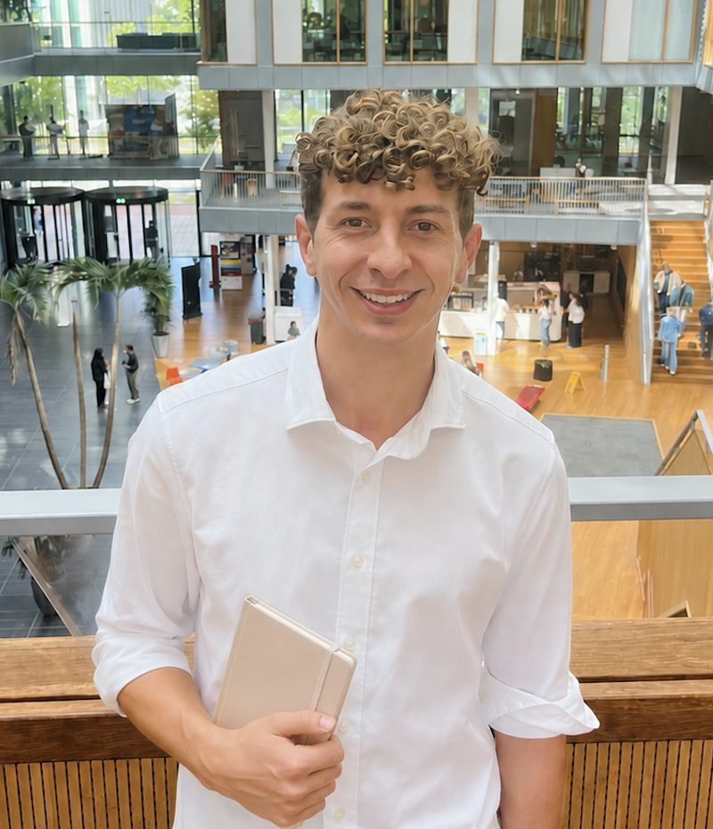

Psychological support
A life in which our problems become too heavy to carry is a difficult one.
Whether difficulties have been there for a while or recent changes are affecting you, psychological support helps you better understand your emotions and identity, and make meaningful change towards the life you value.
Reach out so we can find ways to work together on what you need, and start today.
Low mood and depression
Feeling flat, drained or hopeless for weeks, and losing interest in things that used to matter.
Anxiety and worry
Constant worry, tension or panic that makes everyday situations and decisions feel hard.
Stress and feeling overwhelmed
Too much on your plate, trouble switching off, or early signs of burnout.
Moving abroad and other life transitions
Adjusting to a new country, language or culture, loneliness, and questions of identity when starting over.
Low motivation
Knowing what you want to do but struggling to start, or to keep going.
Relationships and attachment
Repeating patterns with partners, family or friends, such as fear of closeness or of being left.
My approach
The sessions draw on three evidence-based psychological approaches, combining techniques adapted to your specific needs and goals:
- Cognitive Behavioural Therapy
- Practical tools to notice the thought and behaviour patterns that keep you stuck, and to try different ones.
- Acceptance and Commitment Therapy
- Making room for difficult thoughts and feelings while you build a life around what matters to you.
- Schema Therapy
- Understanding emotional patterns learned early in life that still shape your relationships, and growing beyond them.
How it starts
-
Free intro appointment
30 minutes to talk about what you're looking for and whether we're a good fit. No commitment.
-
First session
A full assessment of your history, your goals and what you need right now.
-
Regular sessions
Weekly or every two weeks, at a pace that suits you.
-
Checking progress
Short validated questionnaires along the way, so we can see what's helping and adjust.
Fees and booking
All sessions are online via Google Meet.
Payment is via PayPal or bank transfer. You can pay per session or receive a monthly invoice.
Health insurance
Sessions are paid privately and aren't covered through health insurance.
- Individual sessions50 minutes, typically once a week
- €60per session
- Intro appointment30 minutes, no commitment
- Free
Cancellations
Cancel before 22:00 the day before your session and you won't be charged. Life happens, so let me know as early as you can and we'll reschedule.

About me
Hi!
I'm Gabriel Zanella. I trained and graduated in Clinical Psychology in the Netherlands and now live in Madrid, working online with adults around the world.
I started this service to offer the kind of care I think people deserve: welcoming, warm and unique to each person, while grounded in scientific methods. My aim is for people to feel truly understood, so that together we can put real effort into building a life that feels meaningful and worth living.
My approach is evidence-based, and also shaped by my own experience of working through depression and life challenges. Besides sessions, I lecture on the Master's in Psychological Intervention at CEDEU (Spain) and collaborate on academic research.
Education and training
- MSc Clinical Psychology, Utrecht University 2022
- BSc Psychology, Vrije Universiteit Amsterdam 2021
- Schema Therapy, Dutch Institute of Schema Therapy 2024
- Acceptance and Commitment Therapy, Contextual Consulting 2025
- Mental health coaching, Overcome UK 2026
Affiliations
- Association for Contextual Behavioral Science (ACBS)
Get in touch
The easiest first step is a free intro appointment. If you'd rather ask something first, send me an email.
Zan Psychology is not an emergency service. If you are in crisis or at risk of harm, call your local emergency number (112 across the EU) or go to your nearest emergency department.